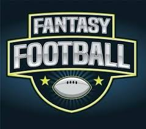

Fantasy Football: A Strategic Passion
What is Fantasy Football?
Fantasy football is a popular online game where participants create their own teams by drafting real-life professional football players and competing against others based on the players' actual performance in games. Originating in the 1960s but gaining mainstream popularity in the internet age, fantasy football allows fans to immerse themselves in the NFL on a deeper level. Each participant, known as a manager, selects players during a draft and forms a roster comprising positions such as quarterback, running back, wide receiver, tight end, defense/special teams, and kicker. Points are awarded based on real-life statistics like yards gained, touchdowns scored, and other in-game achievements. Managers face off weekly in head-to-head matchups or compete for the most points in a league format over the course of the NFL season.
Why Fantasy Football?
What makes fantasy football particularly engaging is its blend of strategy, knowledge, and chance. Drafting players requires an understanding of NFL rosters, player potential, and injury history, while mid-season management involves trading players, adding free agents, and setting optimal lineups based on matchups and bye weeks. The competitive nature of leagues, often filled with friends, family, or coworkers, adds a social dimension to the game. Trash talk, bragging rights, and sometimes monetary rewards or trophies heighten the stakes, making every decision feel significance.
How to Build Your Fantasy Football Team
- Drafting Players
- Research Player Stats
- Understand Scoring Rules
- Pick the Best Available Talent
- Managing the Season
- Make Weekly Adjustments
- Trade with Other Managers
- Stay Ahead of Injuries
- Winning the Championship!
Fantasy Football in Action
Learn the Basics of Fantasy Football
"Interactive Tableau Visualization

Jump to Top